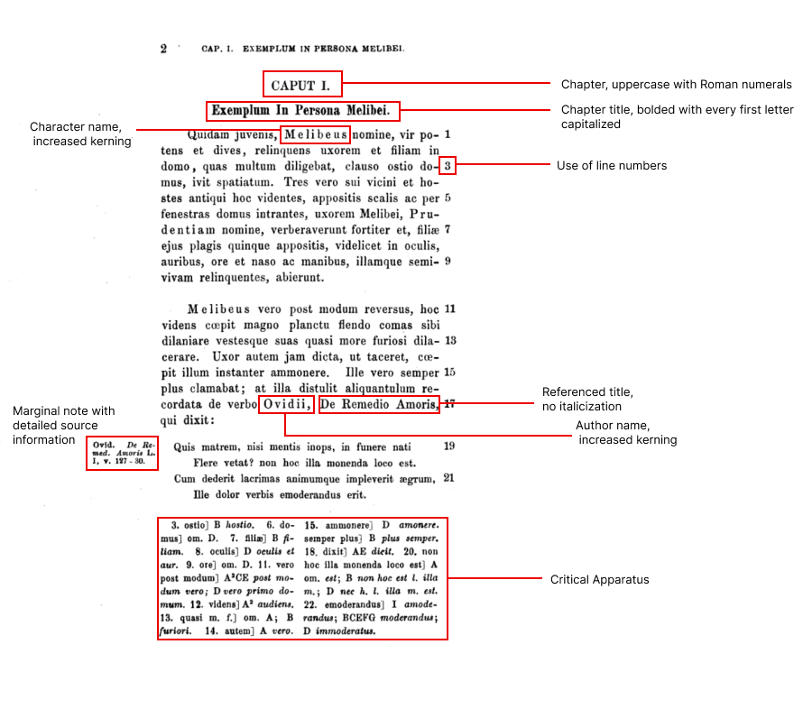

About
The Liber Consolationis Digital Archive is an ongoing research project by undergraduate students of Washington and Lee University under the direction of Melissa Vise, Assistant Professor of History, and Mackenzie Brooks, Associate Professor and Digital Humanities Librarian. The project welcomes a breadth of interests including (but not limited to) medieval history and literature, classics, digital humanities, data science and coding.
The project aims to preserve and present Liber Consolationis et Consilii in a more comprehensive and interactive format with Text Encoding Initiative (TEI). Textual transmission and encoding decisions are explained below. To learn about the historical context of Liber Consolationis et Consilii, read here.
Margaret Alexander, Class of 2024
Nayongi Borthwick, Class of 2023
Site logo, web design, and source verification.
❧ Evolution of the Text
❧ From Manuscripts to Critical Edition
While Liber Consolationis et Consilii was originally published in 1246, the core Latin text on this site is from Thor Sundby's 1873 critical print edition, published by The Chaucer Society in London. It has since been digitized by Google Books. Sundby’s critical edition is the product of 15 collated manuscripts. To get a better idea of what Sundby was working with, here are the first pages from two manuscripts, designated by Sundby as A and A2, respectively.


While raw manuscripts are not the primary focus of this project, one should note the lack of marginalia in the manuscripts. Sundby’s most remarkable contribution—aside from laboriously noting textual variants—was verifying over 500 external referrences that would not have been present in the manuscripts. Within the text itself, Albertano usually introduces a quote with the attributed author and occasionally the title of the work, though this is less common. However, many quotations are attributed passively: consuevit dici—translated as it is accustomed to be said. Even when an author and title are explicitly named, Albertano never includes numerical identifiers (chapters, verses, line numbers, etc.). Here is the first page of Sundby’s text:

Notice that in the margin Sundby provides a specific reference to Ovid’s Remedia Amoris (the portion highlighted red). The foot of the page is set aside for the critical apparatus. The following is a breakdown of each textual component with its respective formatting. Some of these formatting choices are less common today, such as increasing the kerning of a name.
❧ From Critical Edition to Digital Transcription
In 2000, scholar Angus Graham digitally transcribed Sundby's text into a Word document. Graham changed Sundby’s marginal notes to footnotes, indicated by superscripted numbers. He also added around twenty notes on sources that Sundby had not included. He marked these contributions in red text.

However, he silently updated Sundby’s notes to reflect modern standards. For example, “Ovid. De Remed. Amoris L. I, v. 127-30.” became “Ovid, Remedia Amoris, 127-130.” This example is a less drastic change than others since lines of poetry are more concrete numbering systems than those used for classical prose.
Transcription Errors
As expected, Graham made human errors when transcribing Sundby’s text. The 44 identified errors can be characterized in one of the following ways:
- Omission or insertion of letters
These errors resulted from mistyping a word by hitting the wrong key and are most obvious (and therefore easy to correct). They are less likely to impact the translation when a consonant is missing or added, but could affect the translation where a vowel changes the case of a noun or the tense of a verb (verbs that end in “nt” where they should end in “m” are the result of Microsoft spell-check).
- Example: et maxime a senibus consilium postulanfum est.
- Correction: et maxime a senibus consilium postulandum est.
- Misinterpretation of letters
While we do not know about the physical source Graham used to transcribe, he likely used an original version with poor or aged printing, or he used a poor scan or microfilm. This made it difficult for him to distinguish between two letters—most commonly “e” and “c”. This could affect the translation.
- Example: ut hominem experiri omnia cogat cumque mendacem faciat
- Correction: ut hominem experiri omnia cogat eumque mendacem faciat
- Omission of phrases where a word is duplicated
Perhaps Graham’s most crucial mistake is the omission of entire phrases. This happened whenever there was a duplicated word in a phrase. Graham likely transcribed small four-to-five word chunks at a time. When his eyes returned to the source, he would see the word that he had just left off in a different (but close) location to the first one.
- Example: Consilium vel secretum absconditum quasi in carcere suo tenet ligatum
- Correction: Consilium vel secretum absconditum quasi in carcere tuo est retrusum, revelatum vero te in carcere suo tenet ligatum
Though these discrepancies are usually clear, corrections to Graham's transcription have been marked within the TEI.
At its surface, Liber Consolationis et Consilii is less of a story than a moral dialogue. The majority of the text is speech between characters with minimal third-person narrative describing the characters’ actions. The plot is rather simple: Life-long enemies of Melibeus beat up his wife and daughter, he counsels many individuals, and chooses not to pursue vendetta. The dialogue contained therein, however, is dense, complex, and perhaps contradictory.
Text analysis by Voyant reveals that aside from common prepositions and conjunctions, dixit (translated as he/she/it said) is the most frequently occuring word, with 190 occurences. This excludes conjugated variants dixi (22), dixisti (14), dixerunt (7), dixero (2), dixerim (2), dixisse (1), dixeris (1), and dixerat (1). The defective ait (he/she/it says) occurs 116 times. Verbs from the present tense stem dic- are as follows: dicitur (24), dici (23), dicit (18), dicere (13), dicens (10), dicunt (9), dico (6). The passive participles dictum and dicta occur 21 times combined.
In summary, there are at least 527 words related to saying/speaking. Even more importantly are the quotes that follow. Like other medieval works, Liber Consolationis et Consilii draws upon the sayings of numerous classical authors including Cicero, Seneca, Ovid, and Horace. However, unlike other medieval moralists, Albertano does not exclusively quote the ancients but also the Bible and early Christian writers (Sundby, 1873). Having a clear understanding of how Albertano intertwines biblical and classical authorities (especially based on topic) could give us insight about continuity and/or discontinuity of justice between the classical era and middle ages. That of course, is only one example.
Below is a visual representation of how often characters quote other sources. Portions of Prudentia's dialogue from chapter 2 are highlighted in different colors according to source types: Old Testament (dark green), the New Testament (light green), and classical sources (blue). Here, the quotes roughly make up 46% of her speech.

❧ Digital Edition Formatting Decisions
After establishing the importance of quotes and identifying their sources, we can more easily explain the encoding and display decisions
When hovering over a quote, it will be highlighted.

When clicking on a quote, the corresponding quote of the other language will highlight with the note appearing in the center of the page.

❧ What modifications have been made to Sundby's text?
- Line numbers no longer exist.
- Each paragraph in the text is numbered according to its respective chapter with the dot as a separation marker. For example, 1.3 identifies the third paragraph of the first chapter.
- Dipthongs have been removed. For example, cœpi now reads as coepi.
❧ Displaying TEI with CETEIcean
❧ Creating a Translation
❧ What English translations were consulted in the translation process?
For biblical references, we initially consulted the New Revised Standard Version Updated Edition (NRSVUE), but ran into trouble when verses from Ecclesiasticus (The Book of Sirach) which Albertano cited were nonexistent in that translation (the Greek and Latin manuscripts differ greatly). We switched to the Douay-Rheims Catholic Bible for consistency. However, we are in the process of creating a feature with comparative NRSV referrences.
For classical references, we consulted Loeb Classical Library.
❧ Current Source List
- Actus Silvestri.
- Albertano, De Amore.
- Alcuin, De Rhetorica.
- Andreas Capellanus, De Amore.
- Authenticae, Corpus Juris Civilis.
- Baldo, Novus Esopus.
- Bernard of Clairvaux, Carmen Paraeneticum ad Rainaldum.
- Boethius, De Consolatione.
- Boncompagno da Segna, Rhetorica Novissima.
- Bracton.
- Cassiodorus, Variae.
- Cato, Distichs.
- Cato, Monostichs.
- Cicero, De Amicitia.
- Cicero, De Inventione.
- Cicero, De Officiis.
- Cicero, De Senectute.
- Cicero, In Verrem.
- Cicero, Tusculan Disputations.
- Codex.
- Curtius Rufus, Historia Alexandrum Magnum.
- Digest.
- Faustino of Arevalo, Isidoriana.
- Fulgentius, Mitologiarum.
- Godfrey of Winchester, Epigrammata.
- Gratian, Decretals.
- Gregory IX, Decretals.
- Horace, Epistulae ad Pisones.
- Hugh of Saint Victor, Didascalicon.
- Innocent III, De Contemptu Mundi.
- Innocent IV, Apparatus in quinque libros decretalium.
- Junstinian, Institutes.
- Lucan, Pharsalia.
- Marbodo of Rennes, Carmina Varia.
- Martin of Braga, Formula Honestae Vitae.
- Ovid, Amores.
- Ovid, Heroïdes.
- Ovid, Remedia Amoris.
- Pamphilus de Amore.
- Peter Alfonsi, Dialogus.
- Peter Alfonsi, Disciplina Clericalis.
- Prosper of Aquitane, Sententiae.
- Prudentius, Psychomachia.
- Pseudo-Bede, Proverbia.
- Pseudo-Caecilius Balbus, De Nugis.
- Pseudo-Martin of Braga, De Moribus.
- Pseudo-Seneca, De Moribus.
- Pseudo-Seneca, Proverbia.
- [Pseudo-] William of Conches, Moralium Dogma Philosophorum.
- Publilius Syrus, Sententiae.
- Sallust, Bellum Catiliniarum.
- Sallust, Bellum Jugurthinum.
- Seneca Maior, Controversiis.
- Seneca, Ad Lucilium Epistulae Morales.
- Seneca, De Beneficiis.
- Seneca, De Clementia.
- Seneca, De Ira.
- Seneca, Epistula ad Alexandrum Magnum.
- Vegetius, Epitoma Rei Militaris.
- Walter of England, Aesop.
- Walther, Proverbia.
Questions?
If you would like to request more information or report errors, please contact Margaret Alexander by emailing alexanderm24@mail.wlu.edu